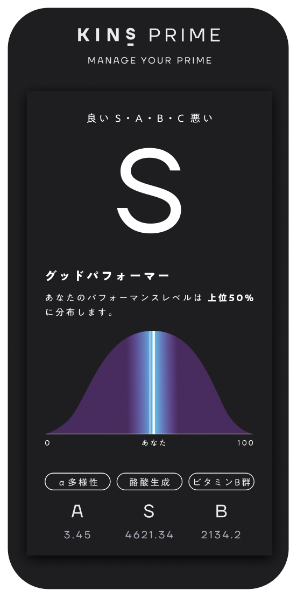
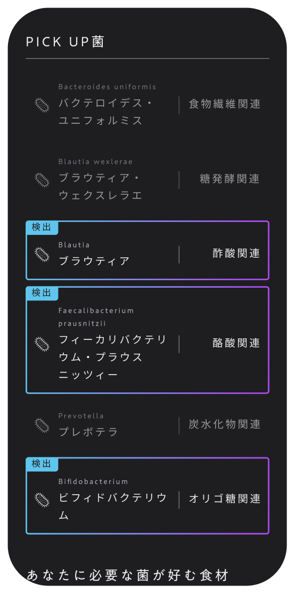
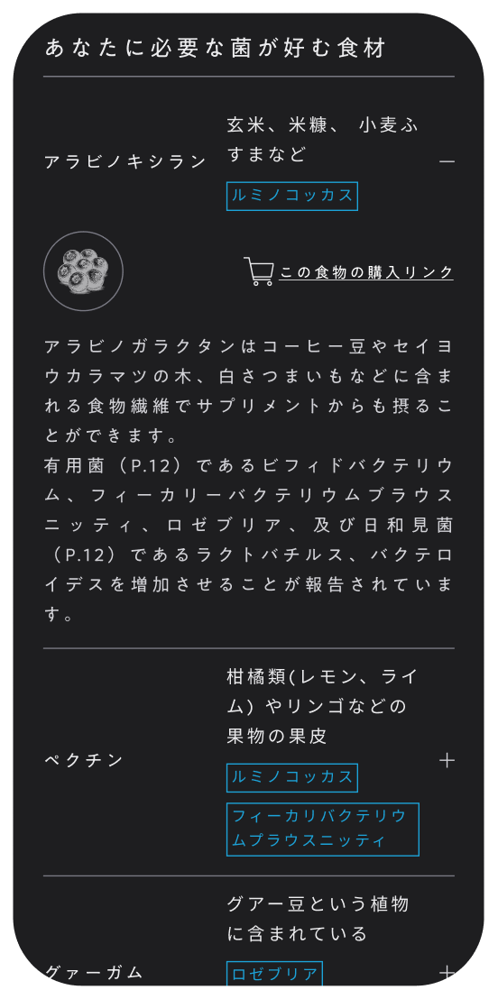
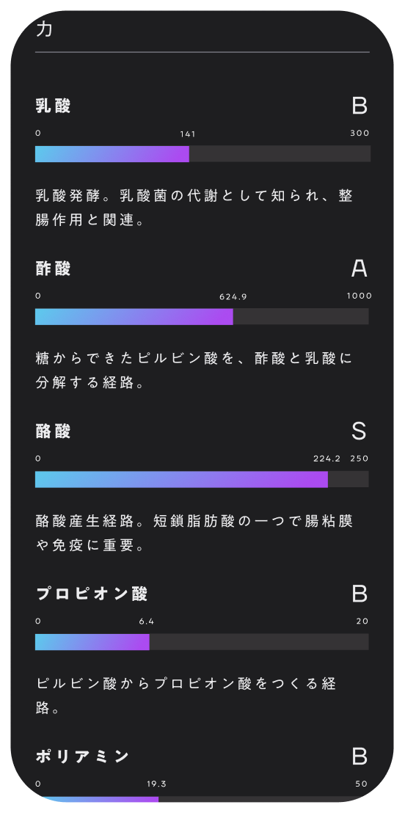

2026.3.2
※ お知らせ
PRODUCTS
まずはここから。ラインナップとプランを一目で比較できます。

KINS PRIME EXECUTIVE
CONSULTING
年間を通じて、『腸』を起点にパフォーマンス最大化に向けた 伴走・コンサルティング支援
年契約¥55,000（税込）/月
サプリメント・検査キット・専門家レビューを含む
FEATURES
商品設計、検査、伴走など KINS PRIMEの主な3つの特徴について、わかりやすくご紹介します。
実感設計
速さ×実感一般的な高麗人参よりも血中到達時間が早い、こだわりの発酵高麗人参を手軽に飲める液体エキスに。
可視化
みえる→わかる→かわる腸内フローラ検査により、 腸内の今のバランスを可視化。
あなたにパーソナライズされた指導で日々のパフォーマンスを改善します。
伴走
専門家がいつでもベストコンディションを意識した食事の工夫や、発酵高麗人参エキスの取り入れ方について、LINEで専門家がアドバイスします
REVIEW
実際に続けた人が、どんな変化を感じたのか。リアルな体感を集めました。
※1. レビューは新しい順に表示しています
※2. 個人の感想であり、効果効能を保証するものではありません
※ログインが必要です。商品を購入されたお客様のみ投稿いただけます。
PREFERENCE
圧倒的にこだわった2つのプロダクト。
腸内フローラ検査
腸内フローラの今のバランスを可視化し、
日々のパフォーマンスを高める生活づくりのヒントを得る検査です。

パフォーマンスレベルの
総合評価
腸内フローラを測る上で重要とされるα多様性、酪酸生成、ビタミンB群生成のスコアから総合評価を可視化します。

PICK UP菌
KINSが重視する菌を確認。有無・比率の目安を表示し、“好物の食材”で育てる方向を提案します。

有用菌が好む食材
各有用菌ごとに相性の良い食物繊維・発酵食品・ポリフェノール等を提示します。

ビタミンや乳酸、
短鎖脂肪酸の評価
腸内細菌の傾向から、ビタミン、短鎖脂肪酸・乳酸の産生ポテンシャルを推定表示します。
発酵高麗人参
6年根の高麗人参を、KINSの発酵技術で液体エキスに。
余計な派手さより、日々の土台づくりに寄り添う一包を目指しました。
持ち運びしやすいスティックで、必要なときにサッと。

産地のこだわり
本場韓国の農園から、最も有効成分が濃縮される“6年根”だけを厳選して使用しています。

低分子化
高麗人参の有効成分を、より吸収されやすい「コンパウンドK」へと低分子化し、腸内環境に左右されずにしっかり届けます。

濃度と早さ
通常の高麗人参に比べ、血中濃度118.3倍、血中到達時間が3倍早いとされる発酵高麗人参を使用しています。

圧倒的高容量 コンパウンドK
一般的な高麗人参ではごくわずかしか含まれない「コンパウンドK」を、1包あたり15mgという高濃度で安定配合。※1日2包(30mg)の摂取を推奨しています。

LINE
KINS PRIMEの最新ニュースをLINEでいち早くお届けします。
コンディションに関するご相談も受付中。